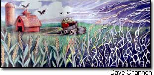
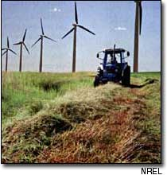

Salmon genetically modified to grow faster are the newest battleground in the bioengineered food debate. The altered-fish controversy joins continuing concerns about the food safety, environmental risks and economic fallout of genetically modified (GM) corn, soy and rapeseed crops, and GM growth hormones used in dairy cattle.
Legislation to control the transport and labeling of GM salmon enjoys strong support from consumer, environmental and commercial fishing groups.
The transgenic salmon contain genes from the ocean pout fish and Chinook salmon and grow seven times faster than natural wild salmon. The GM males are more attractive to wild female salmon, leading to concerns that this modified species will outcompete and cause the extinction of smaller wild salmon species. (SOURCE: SAN FRANCISCO CHRONICLE)
The coffee giant Starbucks is the target of a Fair Trade/No GMOs Campaign by the Organic Consumers Association (OCA). The effort is designed to get Starbucks to serve and promote Fair Trade coffee and to remove genetically engineered ingredients from their food and dairy products.
Activists protested outside the company's Seattle headquarters during the 2003 annual shareholders meeting, and OCA has a "Send a Free Fax to Starbucks' CEO" offer on its Web site, www.organicconsumers.org/starbucks/.
Genetically engineered crops and genetically modified organisms (GMOs) are threatening the future of organic farming. The fourth National Organic Farmers Survey documents early impacts GMOs are having on certified organic farming. Forty-six percent of the survey's 1,034 respondents rated the risk of exposure and possible contamination of their organic farm products by GMOs as "moderate or greater," with 30 percent of the 46 percent ranking that risk "high or very high."
Survey respondents identified contaminated seed stock (see story at right) as their primary concern, followed by GMO pollen drift in the field and contaminated inputs other than seed, including seed inoculants, manures or composts from materials obtained off the farm.
The survey results were released in May at an Organic Trade Association conference. For more information, visit www.ofrf.org.
As public awareness of the controversies surrounding genetically modified (GM) crops grows, the ability to choose whether or not to eat gene-altered food is quickly diminishing.
The reasons are twofold: First, many GM crop plants and farm fields are not closed units. They naturally spread their GM traits and "contaminate" other plants and farm fields. This happens through pollen carried by wind or insects, or by GM seed that falls onto non-GM fields from passing trucks or from farm equipment previously used on a transgenic field.
Second, because thus far the government is treating bioengineered food crops the same as crops produced through conventional breeding, there's been little attempt to segregate them in commodity grain channels or to keep transgenic varieties from contaminating the nation's primary seed stocks.
Walter Fehr, an agronomist and director of the Office of Biotechnology at Iowa State University, says GM varieties of staple crops like corn and soybeans may have contaminated seed stocks from breeder seed on down. Breeder seed is supposed to be the purest version of a crop variety. All the seed for any given variety comes from breeder seed, and if it contains transgenic material, everything that descends from it will, too.
Comprehensive research to determine the extent of transgenic contamination in public seed stocks hasn't been done. But, Fehr says, incidents of transgenic contamination of seed stocks have occurred.
Certified organic food is supposed to be 100 percent GM-free. But now both organic and conventional farmers who don't want biotech varieties can no longer trust their seed. Transgenic contamination is so rampant that seed suppliers won't guarantee their seed is GM-free. That, plus concerns about contamination through pollen drift have stopped many organic farmers in the Midwest from growing corn, soybean and rapeseed crops.
In April 2002, Western Producer, a Canadian agricultural newspaper, quoted one biotech industry supporter who said that despite rising public opposition to biotech foods, increasing GM acreage may eventually end the debate. "It's a hell of a thing to say that the way we win is to not give the consumer a choice, but that might be it," said Dale Adolphe, executive director of the Canadian Seed Growers Association.
So far, only four crops - corn, soybeans, rapeseed and cotton - account for most of the biotech crops on the market. But GM contamination issues are about to get much more dangerous as food crops are being engineered to produce pharmaceutical drugs and industrial chemicals.
Citizens need to weigh in on the biotech food debate, before there is no choice. In the United Kingdom, a national, government-sponsored public debate got under way in June. For details and updates, and tips on how you can help determine your food's future, visit the "GM Nation?" Web site, www.gmnation.org.uk . - Karen Charman
When it was determined in mid-May that an 8-year-old cow slaughtered four months earlier in Athena, Canada had "Meld Cow I Disease" (BSI, or bovine spongiform encephalopathy), the United States immediately banned all beef imports from that country as Canadian inspectors began trying to figure Out how the Cow was infected. The hope was to avoid another Mad Cow disaster like the one that hit Europe in the mid-1980s and 90s. In England, the epicenter of that outbreak, 100,000 cases were confirmed by 1993. 5 million cattle were slaughtered and dozens of people died of the deadly human form of the disease which is thought to be contracted from eating tainted meat.
At the Canadian slaughterhouse, the infected cow's head was saved for testing, but the rest of the carcass went to a rendering plant that makes fertilizers and feeds. After the Mad Cow diagnosis arrived from a British lab, Canadian officials began trying to trace the animals history and determine what exactly had happened to its remains. The incubation period of this disease ranges from to 8 years, so the investigators faced a difficult task.
For starters, the rest in the 150-Cow herd on the Alberta farm from which the cow carne were quarantined, slaughtered and tested. And four days after the initial announcement 13 farms in three provinces - Saskatchewan and British Columbia in addition to Alberta - were quarantined as investigators focused on the possible use of the cow's retrains in livestock feed. Then, Albertas Agriculture Minister reported her concern that the sick cow may have been infected by eating feed containing the protein of other infected cows or sheep, a practice banned in 1997 in Canada but not well policed.
The feeding of ruminant meat and bone meal to other ruminants had been a common practice in many countries until British experts determined that as the cause of BSI: infection in cattle. Some countries now ban the practice; others, including the United States, have set some restrictions. (SOURCE. USDA: U.S. FOOD AND DRUG ADMINISTRATION; THE WASHINGTON POST AND THE TORONTO STAR)
If you're looking for more information about the issue of genetically modified food crops, check out the Ag BioTech InfoNet, www.biotech-info.net/net/ .
According to information on the site. Ag BioTech InfoNet "hopes to emerge is a valuable resource for anyone trying to better understand the implications of agricultural biotechnology. Our goal is to facilitate access to critical, original documents and information, and recognized experts. A public forum, teachers resources and a sources and links" page round out the offering.
Creating electricity from farmed crops has long been a green dream. After years of research, biopower from two unlikely crops - willow and switchgrass - soon may be a reality in New York and Iowa.
Near Niagara Falls, New York, the Niagara Mohawk Power Co.'s Dunkirk Station is involved in a project that centers on 500 acres planted with a specially developed species of willow. When topped back to 4 inches, the trees produce numerous suckers that can be harvested every three to four years, cut into chips and burned alongside coal to produce electricity.
In southern Iowa, the 8-year-old Chariton Valley Biomass Project has a similar effort underway using switchgrass, a native perennial grass of the Great Plains. Several thousand tons of baled switchgrass are stockpiled for testing near Alliant Energy's Ottumwa Generating Station, where, if all goes well, the grass will replace a portion of the coal normally burned there. These two projects make up North America's largest investment to date in technologies that convert crop plants into power.
Both programs have faced practical challenges, from developing high-yielding varieties to solving staffing and machinery problems at the power plants. Fortunately, both projects are backed by consortiums of talented minds, including plant breeders, industrial engineers, land-use experts, foresters and the ultimate experts in growing and harvesting crops: farmers.
Because biomass fuels are bulky, emphasis is placed on producing them close to the power plants to reduce transportation costs. "Our plans include using switchgrass grown within 70 miles of the power plant," says Dora Guffey, coordinator of Chariton Valley Resource Conservation and Development, which operates the southern Iowa biomass project.
In New York, project staffers have found that even with transportation costs figured in, properly grown willow yields 16 to 32 units of energy for every unit of energy invested in its production and conversion. To get such numbers, a good biomass crop must require little in terms of fertilizer, water and labor.
Environmental integrity also is part of the package. Much of the acreage involved in willow and switchgrass production already is enrolled in the U.S. Department of Agriculture's Conservation Reserve Program (CRP), which aims to help protect environmentally sensitive land from degradation. Both willow and switchgrass have received high ratings as wildlife habitat and windbreaks and for erosion control. In New York, the project staff found the willow plantings hosted such robust communities of soil microorganisms and songbirds that they qualified as "refugee corridors" for displaced species in an otherwise agricultural area; in Iowa, harvested switchgrass proved a preferred habitat for such grassland birds as meadowlarks and bobolinks. Yet money issues remain; biopower still costs more than coal, but as coal and other fossil fuels dwindle, biopower is expected to gain value. For more information on these programs, visit the Biopower Web site: www.eren.doe.gov/biopower . - Barbara Pleasant.
Mother Earth News
|
 Paired with other renewable energy technologies such as wind power, the power from biomass like this switchgrass crop, above, could fuel the future. |
 |
|